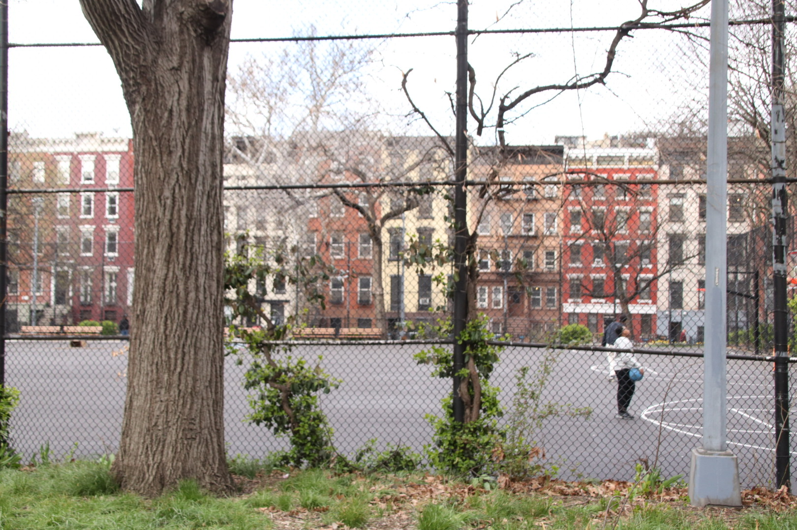
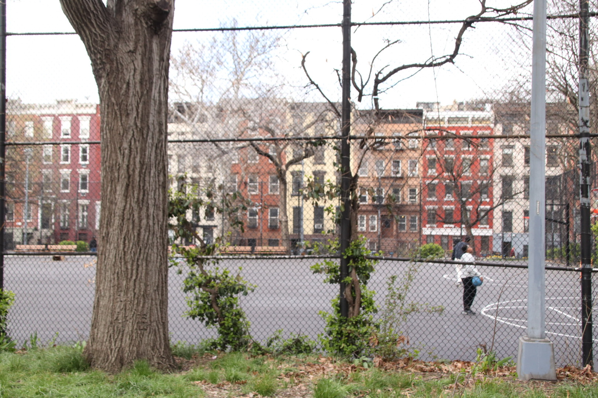

I. The Space
On August 6th, 1988, the New York City Police Department incited (New York Times Editorial Board) a riot at Tompkins Square Park in Manhattan’s East Village against groups of “drug pushers, homeless people, and young people known as squatter and punks” protesting a park curfew and gentrification (Perez-Rivas).
One block west of that site today, at Ladybird, “a vegetable bar” you can, according to their website: “Eat, Drink, Start a Revolution.” There, a 12 ounce beer goes for $10, a cocktail for $15 to $18, a single dumpling-sized bun for $8, the cheapest dessert – the “Brûlée” for $15 (“Ladybird”). North one block is St Mark’s place, where bars at a similar price-point are interspersed with pop-up peddlers’ stands selling vinyl at as low as $2 an album to the sharp haggler; where upscale teas from around the world can be purchased at Physical Graffitea: a cafe with a floral, wooded, low-lit aesthetic. Nearby, a shop exclusively selling small servings of Hong Kongese mango desserts in artisanal ceramics could be placed in frame with facade decorated by a mass of the disembodied remains of baby dolls and graffiti art reading slogans like “EAT COCK FUCK COPS.” Just east of all of this is Tompkins Square Park. Today, Elm trees rise above a playground teeming with the laughter of young children and a dog area with a zen garden-like crushed stone ground, and several green lawns. Occasional punk shows are held there; the audiences tend to be in their forties or older. While some of the businesses farther east echo the aesthetic inclinations of their counterparts west of Tompkins, the area (known as Alphabet City, since the Avenues are named with letters rather than New York's usual numbered names) is more residential. Charming brownstones (a cursory sort by price search on Zillow reveals the cheapest of studios go for $2,100 per month) are interspersed with relics of the neighborhood’s Puerto Rican (or, Nuyorican) heritage: little community gardens with Spanish names (like Pancho Ramos and La Plaza) pepper the blocks around Avenue B and Avenue C, harboring flora from weeping willows to roses to squash. Avenue C is also known as Loisaida avenue, a Spanglish reimagination of “Lower East Side"1 coined by Bittman “Bimbo” Rivas in a 1974 poem (McCarthy; Rivas). The neighborhood’s vibrant city-sanctioned mural art commemorates community leaders of the ‘70s through the ‘90s. Walking through the East Village in 2024, though, the paint on the walls that strikes me the most is a motif in the graffiti: plain, unstyled text that reads “My keys don’t fit these locks No More.”
In the ‘80s, the East Village was a very different place: in the words of Tony Magia – founder of The Other Paper, a twice-monthly hyperlocal paper on news east of Broadway and South of 14th Street – the East Village was a place of:
abandoned tenements, drug raids and overdoses, the homeless on the Bowery, social change without social media, the myriad of faces you would see on the sidewalks and inside the dark dens of the Mudd Club, Danceteria, Max’s Kansas City, and CBGBs… The East Village was always a place where struggling artists could find compatriots and affordable rents. Starting with the beatniks, then the hippies and when I was there the punkers. (Carlson et al.)
Leading up to this, New York’s turn towards finance and real estate led to a loss of the industrial jobs that sustained the working class livelihoods of the LES. After all the strain from a century of continuous use, the neighborhood’s tenements fell into disrepair by the ‘70s, making them unprofitable for landlords who stopped making repairs, stopped paying for heat and water, and eventually abandoned their buildings or even burnt them down for the insurance money (Starecheski, Squatters: Property 63). Tompkins was the center of the fallout of all of this: “ravaged by the twin plagues of crack and AIDS…Tompkins…became an ad-hoc camp for homeless people, squatters, punks, drug dealers, and users” (Rosen). Magia, as a student and a journalist, had a particular sort of relationship with the area: “The gritty neighborhood and the crime were all great sources for an idealistic photojournalist to hone his muckraking skills. I didn’t notice squalor as much because I was part of it and saw it through a camera lense” (Carlson et al).
When asked about what he missed about the neighborhood, Magia mentioned “this one after hours place called Club Zero. It was a guy’s living room with a plywood bar serving only Jack Daniels and cans of bud” (Carlos et al). Magia’s narrative of the East Village is one of dilapidated urban space, but it is also one of people searching for and (not only finding, but) making the spaces they desire. Magia and the owner of Club Zero both had desires – namely, to journalistically portray the teeming urban life of the East Village and to have a homely bar – but they both actualized them by creating their own space (and therefore community) to that end.
When done by immigrants, poor people, drug users, and political radicals, though, the transformation of urban space to one's ends is often not sanctioned by the state. To the people of the East Village, Tompkins Square Park was a garden where one could cultivate, a bazaar where one could buy and sell, a home and town where one could live, a community center where one could discuss, a concert hall where one could play, sing, dance, listen, and enjoy. To the state and those who aligned themselves with its authority, it was public property on which such disorderly activity was criminal. Thus, a fundamental contest arose: between the communities built around the act of using and transforming urban space to their end, whose life was defined by this labor, and a political authority whose systems of rights and property could only apprehend that labor as criminal. What were the narratives on the side of power that defined the contest for this space? What can we extrapolate about systems of power from them? And, on a more human level – though perhaps I indulge in a romantic notion to say that everyday life speaks more to humanity than (human) systems of power – what were the subaltern narratives2 around how life was lived in this space?


^ the vibes on st marks place, 2024
^ the vibes at tompkins in the late '80s and early '90s
 

^ the vibes at tompkins in 2024
1 Today, the Lower East Side (LES) is often thought to have its northern border at Houston St and the East Village above it is between Houston St and 14 St. Earlier references to the LES, though, include Alphabet City (which is a part of the East Village east of Tompkins) and Tompkins itself, which are both north of Houston St. In other words, any part of Manhattan south of 14th and east of Broadway (more or less) used to be considered part of the LES. This is why the Nuyorican reinterpretation of the LES (Loisaida) doesn’t actually include the area most commonly referred to as the LES today. Alphabet City, which was historically primarily Latino/a dating back to the ‘70s, was seen as part of the LES back then, but this changed because of the distinct neighborhood identities north and south of Houston (between the contemporary LES and the East Village) from the ‘70s onwards. As late as the ‘80s and ‘90s though, East Village squats are referred to as being in the LES, so this paper will at times use this older sense of the term to situate itself in the vocabulary of the time to which it refers (Nieves, B6; McCarthy, C8).
2 Note that I didn’t ask, simply, “how was life lived in this space?” I don’t know, I didn’t live it. Still, I said in the title that this was an elegy. Why, in an elegy, you might ask, would you forsake yourself to this meta-layer of academic analysis of “narratives on” and “narratives around”? Why remove yourself from the real and visceral life lived at Tompkins by abstracting it into a set of paradigms, of relationships between this idea of power and this idea of subaltern life? Doesn’t that remove the level of intimacy that an elegy should have? I may not have been there in the ‘80s, but maybe I could not just bring together and show art, music, stories, and people from that time and let them speak for themselves. Maybe I could write a story or a poem, or draw a portrait, or paint some non-figurative interpretation, or make a comic or a zine, or pick any artistic approach that has the humility and tender touch to engage with and mourn the loss of the life lived there. Maybe I will. But why pick an approach that presumes to know in the way that this one does? Though I hope this is less of an exercise in presuming to know and more of an exercise in working with useful heuristics to make sense of, my reason for this is a way of avoiding falling into romanticizing the Tompkins of the ‘80s too much. It was a place of creation, of art, of community, of new ways of life; it was a place of homelessness, hard drug use, poverty, and human suffering. That is hard to confront. Maybe I could stare that in the eye with a more artistic approach, but that is why I think there is value in moving into this realm of what it all meant to people – a realm that, when put that way, is not at all foreign to the elegy, and a realm blesses us with a critical approach to understanding our lives in relation with systems of power that is a useful tool for political organizing and (on its best day, perhaps) points to the beauty of life in the way that any elegy should.
Bibliography
xx
xx